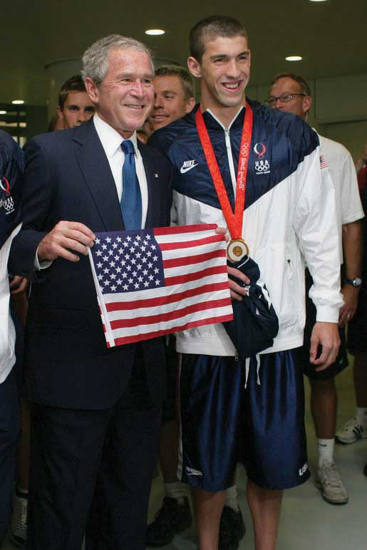
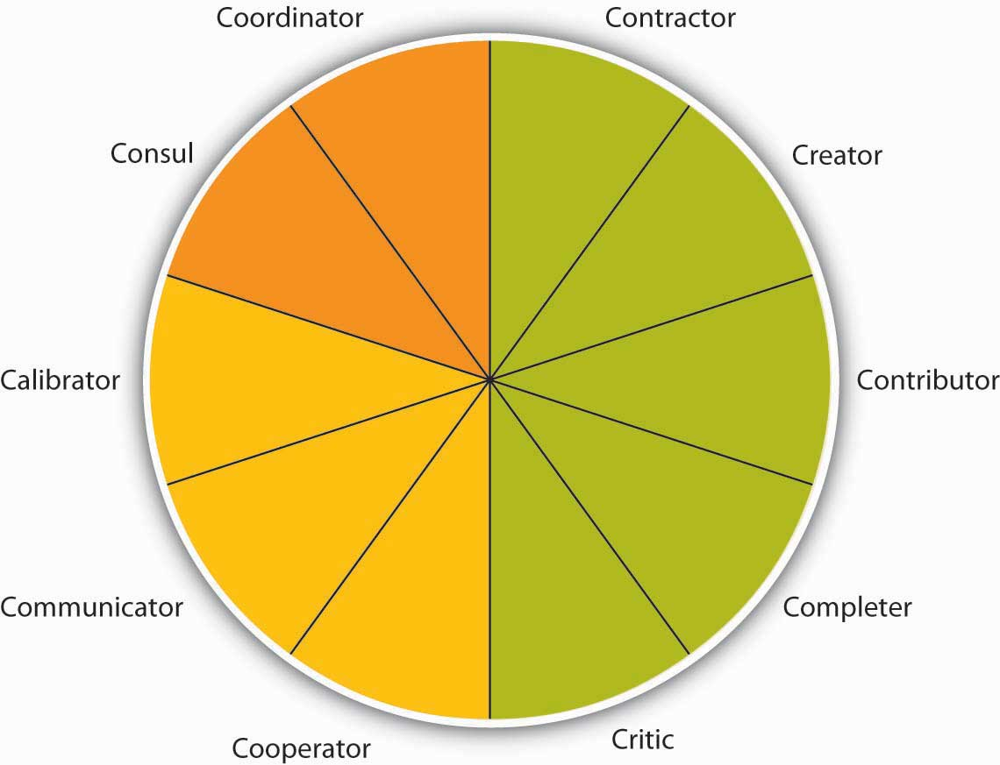
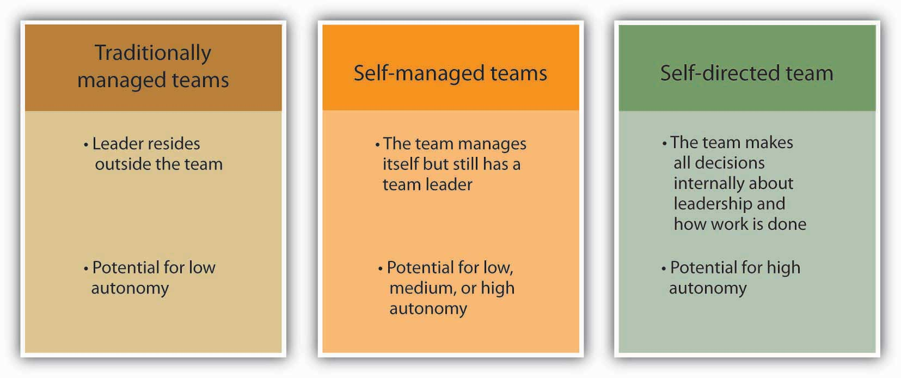

Effective teams give companies a significant competitive advantage. In a high-functioning team, the sum is truly greater than the parts. Team members not only benefit from one another’s diverse experiences and perspectives but also stimulate each other’s creativity. Plus, for many people, working in a team can be more fun than working alone. Let’s take a closer look at what a team is, the different team characteristics, types of teams companies use, and how to design effective teams.
Organizations consist of groups of people. What exactly is the difference between a group and a team? A group is a collection of individuals. Within an organization, groups might consist of project-related groups such as a product group or division or they can encompass an entire store or branch of a company. The performance of a group consists of the inputs of the group minus any process losses such as the quality of a product, ramp-up time to production, or the sales for a given month. Process lossAny aspect of group interaction that inhibits group functioning. is any aspect of group interaction that inhibits group functioning.
Why do we say group instead of team? A collection of people is not a team, though they may learn to function in that way. A teamA cohesive coalition of people working together to achieve mutual goals. is a particular type of group: a cohesive coalition of people working together to achieve mutual goals. Being on a team does not equate to a total suppression of personal agendas, but it does require a commitment to the vision and involves each individual working toward accomplishing the team’s objective. Teams differ from other types of groups in that members are focused on a joint goal or product, such as a presentation, discussing a topic, writing a report, creating a new design or prototype, or winning a team Olympic medal. Moreover, teams also tend to be defined by their relatively smaller size. For instance, according to one definition, “A team is a small number of people with complementary skills who are committed to a common purpose, performance goals, and approach for which they are mutually accountable.”Katzenbach, J. R., & Smith, D. K. (1993). The wisdom of teams: Creating the high-performance organization. Boston: Harvard Business School.
Figure 13.7
Teams are only as good as their weakest link. While Michael Phelps has been dubbed “the world’s greatest swimmer” and received a great deal of personal attention, such as meeting President George W. Bush, he could not have achieved his record eight gold medals in one Olympic games without the help of his teammates Aaron Peirsol, Brendan Hansen, and Jason Lezak.
The purpose of assembling a team is to accomplish larger, more complex goals than what would be possible for an individual working alone or even the simple sum of several individuals working independently. Teamwork is also needed in cases where multiple skills are tapped or where buy-in is required from several individuals. Teams can, but do not always, provide improved performance. Working together to further a team agenda seems to increase mutual cooperation between what are often competing factions. The aim and purpose of a team is to perform, get results, and achieve victory in the workplace. The best managers are those who can gather together a group of individuals and mold them into an effective team.
The key properties of a true team include collaborative action where, along with a common goal, teams have collaborative tasks. Conversely, in a group, individuals are responsible only for their own area. They also share the rewards of strong team performance with their compensation based on shared outcomes. Compensation of individuals must be based primarily on a shared outcome, not individual performance. Members are also willing to sacrifice for the common good in which individuals give up scarce resources for the common good instead of competing for those resources. For example, teams occur in sports such as soccer and basketball, in which the individuals actively help each other, forgo their own chance to score by passing the ball, and win or lose collectively as a team.
The early 1990s saw a dramatic rise in the use of teams within organizations, along with dramatic results such as the Miller Brewing Company increasing productivity 30% in the plants that used self-directed teams compared with those that used the traditional organization. This same method allowed Texas Instruments in Malaysia to reduce defects from 100 parts per million to 20 parts per million. In addition, Westinghouse reduced its cycle time from 12 weeks to 2 weeks, and Harris Electronics was able to achieve an 18% reduction in costs.Welins, R., Byham, W., & Dixon, G. (1994). Inside Teams. San Francisco: Jossey-Bass. The team method has served countless companies over the years through both quantifiable improvements and more subtle individual worker-related benefits.
Companies such as Square D, a maker of circuit breakers, switched to self-directed teams and found that overtime on machines like the punch press dropped 70% under teams. Productivity increased because the setup operators were able to manipulate the work in much more effective ways than a supervisor could dictate.Moskal, B. (1988, June 20). Supervisors, begone! Industry Week, p. 32. In 2001, clothing retailer Chico’s FAS was looking to grow its business. The company hired Scott Edmonds as president, and two years later revenues had almost doubled from $378 million to $760 million. By 2006, revenues were $1.6 billion, and Chico’s had nine years of double-digit same-store sales growth. What did Edmonds do to get these results? He created a horizontal organization “ruled by high-performance teams with real decision-making clout and accountability for results, rather than by committees that pass decisions up to the next level or toss them over the wall into the nearest silo.”
The use of teams also began to increase because advances in technology have resulted in more complex systems that require contributions from multiple people across the organization. Overall, team-based organizations have more motivation and involvement, and teams can often accomplish more than individuals.Cannon-Bowers, J. A. and Salas, E. (2001, February). Team effectiveness and competencies. In W. Karwowski (Ed.), International encyclopedia of ergonomics and human factors (1383). London: CRC Press. It is no wonder organizations are relying on teams more and more.
Teams are not a cure-all for organizations. To determine whether a team is needed, organizations should consider whether a variety of knowledge, skills, and abilities are needed, whether ideas and feedback are needed from different groups within the organization, how interdependent the tasks are, if wide cooperation is needed to get things done, and whether the organization would benefit from shared goals.Rees, F. (1997). Teamwork from start to finish. San Francisco: Jossey-Bass. If the answer to these questions is “yes,” then a team or teams might make sense. For example, research shows that the more team members perceive that outcomes are interdependent, the better they share information and the better they perform.De Dreu, C. K. W. (2007). Cooperative outcome interdependence, task reflexivity, and team effectiveness: A motivated information processing perspective. Journal of Applied Psychology, 92, 628–638.
Teams differ in terms of the tasks they are trying to accomplish and the roles team members play.
As early as the 1970s, J. R. Hackman identified three major classes of tasks: (1) production tasks, (2) idea generation tasks, and (3) problem-solving tasks.Hackman, J. R. (1976). Group influences on individuals. In M. D. Dunnette (Ed.), Handbook of industrial and organizational psychology. Chicago: Rand-McNally. Production tasksTasks that include actually making something such as a building, product, or a marketing plan. include actually making something, such as a building, a product, or a marketing plan. Idea generation tasksCreative tasks such as brainstorming a new direction or creating a new process. deal with creative tasks, such as brainstorming a new direction or creating a new process. Problem-solving tasksTasks involving coming up with plans for actions and making decision. refer to coming up with plans for actions and making decisions, both facets of managerial P-O-L-C functions (planning and leading). For example, a team may be charged with coming up with a new marketing slogan, which is an idea generation task, while another team might be asked to manage an entire line of products, including making decisions about products to produce, managing the production of the product lines, marketing them, and staffing their division. The second team has all three types of tasks to accomplish at different points in time.
Another key to understanding how tasks are related to teams is to understand their level of task interdependence. Task interdependenceThe degree that team members depend on one another to get information, support, or materials from other team members to be effective. refers to the degree that team members depend on one another to get information, support, or materials from other team members to be effective. Research shows that self-managing teams are most effective when their tasks are highly interdependent.Langfred, C. W. (2005). Autonomy and performance in teams: The multilevel moderating effect of task interdependence. Journal of Management, 31, 513–529; Liden, R. C., Wayne, S. J., & Bradway, L. K. (1997). Task interdependence as a moderator of the relation between group control and performance. Human Relations, 50, 169–181.
There are three types of task interdependence. Pooled interdependenceThis exists when team members may work independently and simply combine their efforts to create the team’s output. exists when team members may work independently and simply combine their efforts to create the team’s output. For example, when students meet to divide the sections of a research paper and one person simply puts all the sections together to create one paper, the team is using the pooled interdependence model. However, they might decide that it makes more sense to start with one person writing the introduction of their research paper, then the second person reads what was written by the first person and, drawing from this section, writes about the findings within the paper. Using the findings section, the third person writes the conclusions. If one person’s output becomes another person’s input, the team would be experiencing sequential interdependenceWhere one person’s output becomes another person’s input. . And finally, if the student team decided that in order to create a top notch research paper they should work together on each phase of the research paper so that their best ideas would be captured at each stage, they would be undertaking reciprocal interdependenceThe point at which team members work on each task simultaneously.. Another important type of interdependence that is not specific to the task itself is outcome interdependenceA time when rewards that an individual receives depend on the performance of others., where the rewards that an individual receives depend on the performance of others.
While relatively little research has been conducted on team roles, recent studies show that individuals who are more aware of team roles and the behavior required for each role perform better than individuals that do not. This fact remains true for both student project teams as well as work teams, even after accounting for intelligence and personality.Mumford, T. V., Van Iddekinge, C. H., Morgeson, F. P., & Campion, M. A. (2008). The team role test: Development and validation of a team role knowledge situational judgment test. Journal of Applied Psychology, 93, 250–267. Early research found that teams tend to have two categories of roles: those related to the tasks at hand and those related to the team’s functioning. For example, teams that only focus on production at all costs may be successful in the short run, but if they pay no attention to how team members feel about working 70 hours a week, they are likely to experience high turnover.
On the basis of decades of research on teams, 10 key roles have been identified.Bales, R. F. (1950). Interaction process analysis: A method for the study of small groups. Cambridge, MA: Addison-Wesley; Benne, K. D., & Sheats, P. (1948). Functional roles of group members. Journal of Social Issues, 4, 41–49; Belbin, R. M. (1993). Management teams: Why they succeed or fail. Oxford: Butterworth-Heinemann. Team leadership is effective when leaders are able to adapt the roles they are contributing to or asking others to contribute to fit what the team needs, given its stage and the tasks at hand.Kozlowski, S. W. J., Gully, S. M., McHugh, P. P., Salas, E., & Cannon-Bowers, J. A. (1996). A dynamic theory of leadership and team effectiveness: Developmental and task contingent roles. In G. Ferris (Ed.), Research in personnel and human resource management (Vol. 14, pp. 253–305). Greenwich, CT: JAI Press; Kozlowski, S. W. J., Gully, S. M., Salas, E., & Cannon-Bowers, J. A. (1996). Team leadership and development: Theory, principles, and guidelines for training leaders and teams. In M. M. Beyerlein, D. A. Johnson, & S. T. Beyerlein (Eds.), Advances in interdisciplinary studies of work teams (Vol. 3, pp. 253–291). Greenwich, CT: JAI Press. Ineffective leaders might always engage in the same task role behaviors when what they really need to do is focus on social roles, put disagreements aside, and get back to work. While these behaviors can be effective from time to time, if the team doesn’t modify its role behaviors as things change, they most likely will not be effective.
Figure 13.9
Teams are based on many roles being carried out as summarized by the Team Role Typology. These 10 roles include task roles (green), social roles (yellow), and boundary spanning roles (orange).
Source: Mumford, T. V., Van Iddekinge, C. H., Morgeson, F. P., & Campion, M. A. (2008). The team role test: Development and validation of a team role knowledge situational judgment test. Journal of Applied Psychology, 93, 250–267; Mumford, T. V., Campion, M. A., & Morgeson, F. P. (2006). Situational judgments in work teams: A team role typology. In J. A. Weekley & R. E. Ployhart (Eds.), Situational judgment tests: Theory, measurement (pp. 319–343). Mahwah, NJ: Lawrence Erlbaum.
Five roles make up the task portion of the role typology. The contractor role includes behaviors that serve to organize the team’s work, including creating team time lines, production schedules, and task sequencing. The creator role deals more with changes in the team’s task process structure. For example, reframing the team goals and looking at the context of goals would fall under this role. The contributor role is important because it brings information and expertise to the team. This role is characterized by sharing knowledge and training those who have less expertise to strengthen the team. Research shows that teams with highly intelligent members and evenly distributed workloads are more effective than those with uneven workloads.Ellis, A. P. J., Hollenbeck, J. R., Ilgen, D. R., Porter, C. O. L. H., West, B. J., & Moon, H. (2003). Team learning: Collectively connecting the dots. Journal of Applied Psychology, 88, 821–835. The completer role is also important as it is often where ideas are transformed into action. Behaviors associated with this role include following up on tasks such as gathering needed background information or summarizing the team’s ideas into reports. Finally, the critic role includes “devil’s advocate” behaviors which go against the assumptions being made by the team.
Social roles serve to keep the team operating effectively. When the social roles are filled, team members feel more cohesive and the group is less prone to suffer process losses or biases, such as social loafing, groupthink, or a lack of participation from all members. Three roles fall under the umbrella of social roles. The cooperator role includes supporting those with expertise toward the team’s goals. This is a proactive role. The communicator role includes behaviors that are targeted at collaboration such as practicing good listening skills and appropriately using humor to diffuse tense situations. Having a good communicator helps the team to feel more open to sharing ideas. And the calibrator role is an important one and serves to keep the team on track in terms of suggesting any needed changes to the team’s process. This role includes initiating discussions about potential team problems such as power struggles or other tensions. Similarly, this role may involve settling disagreements or pointing out what is working and what is not in terms of team process.
The final two roles are related to activities outside of the team that help to connect the team to the larger organization.Anacona, D. G. (1990). Outward bound: Strategies for team survival in an organization. Academy of Management Journal, 33, 334–365; Anacona, D. G. (1992). Bridging the boundary: External activity and performance in organizational teams. Administrative Science Quarterly, 37, 634–665; Druskat, V. U., & Wheeler, J. V. (2003). Managing from the boundary: The effective leadership of self-managing work teams. Academy of Management Journal, 46, 435–457. Teams that engage in a greater level of boundary-spanning behaviors increase their team effectiveness.Marrone, J. A., Tesluk, P. E., & Carson, J. B. (2007). A multi-level investigation of antecedents and consequences of team member boundary-spanning behavior. Academy of Management Journal, 50, 1423–1439. The consul role includes gathering information from the larger organization and informing those within the organization about team activities, goals, and successes. Often the consul role is filled by team managers or leaders. The coordinator role includes interfacing with others within the organization so that the team’s efforts are in line with other individuals and teams within the organization.
There are many different types of teams, and a given team may be described according to multiple types. For example, a team of scientists writing a research article for publication may be temporary, virtual, and cross-functional.
Teams may be permanent or long term, but more typically, a team exists for a limited time. In fact, one-third of all teams in the United States are temporary.Gordon, J. (1992). Work teams: How far have they come? Training, 29, 59–62. An example of a temporary team is a task forceA temporary team that is asked to address a specific issue or problem until it is resolved. that addresses a specific issue or problem until it is resolved. Other teams may be temporary or ongoing such as product development teamsA type of team that may be either temporary or ongoing.. In addition, matrix organizations have cross-functional teamsTeams that involve individuals from different parts of the organization staff. where individuals from different parts of the organization staff the team, which may be temporary or long-standing.
Virtual teamsTeams in which members are not located in the same physical place. are teams in which members are not located in the same physical place. They may be in different cities, states, or even different countries. Some virtual teams are formed by necessity, such as to take advantage of lower labor costs in different countries; one study found that upward of 8.4 million individuals worldwide work virtually in at least one team.Ahuja, M., & Galvin, J. (2003). Socialization in virtual group. Journal of Management, 29, 161–185. Often, virtual teams are formed to take advantage of distributed expertise or time—the needed experts may be living in different cities. A company that sells products around the world, for example, may need technologists who can solve customer problems at any hour of the day or night. It may be difficult to find the caliber of people needed who would be willing to work at 2 a.m. on a Saturday, for example. So companies organize virtual technical support teams. BakBone Software, for instance, has a 13-member technical support team. Each member has a degree in computer science and is divided among offices in California, Maryland, England, and Tokyo. BakBone believes it has been able to hire stronger candidates by drawing from a diverse talent pool and hiring in different geographic regions rather than limiting hiring to one region or time zone.Alexander, S. (2000, November 10). Virtual teams going global. Infoworld. Retrieved February 12, 2009, from http://www.infoworld.com/articles/ca/xml/00/11/13/001113cavirtual.html.
Despite potential benefits, virtual teams present special management challenges, particularly to the controlling function. Managers often think that they have to see team members working to believe that work is being done. Because this kind of oversight is impossible in virtual team situations, it is important to devise evaluation schemes that focus on deliverables. Are team members delivering what they said they would? In self-managed teams, are team members producing the results the team decided to measure itself on?
Another special challenge of virtual teams is building trustThe belief that the other party will show integrity, fairness, and predictability in one’s actions toward the other.. Will team members deliver results just as they would in face-to-face teams? Can members trust one another to do what they said they would do? Companies often invest in bringing a virtual team together at least once so members can get to know one another and build trust.Kirkman, B. L., Rosen, B., Gibson, C. B., Tesluk, P. E., & McPherson, S. O. (2002). Five challenges to virtual team success: Lessons from Sabre, Inc. Academy of Management Executive, 16, 67–79. In manager-led virtual teams, managers should be held accountable for their team’s results and evaluated on their ability as a team leader.
Finally, communication is especially important in virtual teams, through e-mail, phone calls, conference calls, or project management tools that help organize work. If individuals in a virtual team are not fully engaged and tend to avoid conflict, team performance can suffer.Montoya-Weiss, M. M., Massey, A. P., & Song, M. (2001). Getting it together: Temporal coordination and conflict management in global virtual teams. Academy of Management Journal, 44, 1251–1262. A wikiAn Internet-based method for many people to collaborate and contribute to a document or discussion. is an Internet-based method for many people to collaborate and contribute to a document or discussion. Essentially, the document remains available for team members to access and amend at any time. The most famous example is Wikipedia, which is gaining traction as a way to structure project work globally and get information into the hands of those that need it. Empowered organizations put information into everyone’s hands.Kirkman, B. L., & Rosen, B. (2000). Powering up teams. Organizational Dynamics, 28(3), 48–66. Research shows that empowered teams are more effective than those that are not empowered.Mathieu, J. E., Gilson, L. L., & Ruddy, T. M. (2006). Empowerment and team effectiveness: An empirical test of an integrated model. Journal of Applied Psychology, 91, 97–108.
Top management teamsTeams that are appointed by the chief executive officer (CEO) and, ideally, reflect the skills and areas that the CEO considers vital for the company. are appointed by the chief executive officer (CEO) and, ideally, reflect the skills and areas that the CEO considers vital for the company. There are no formal rules about top management team design or structure. The top management team often includes representatives from functional areas, such as finance, human resources, and marketing or key geographic areas, such as Europe, Asia, and North America. Depending on the company, other areas may be represented such as legal counsel or the company’s chief technologist. Typical top management team member titles include chief operating officer (COO), chief financial officer (CFO), chief marketing officer (CMO), or chief technology officer (CTO). Because CEOs spend an increasing amount of time outside their companies (i.e., with suppliers, customers, regulators, and so on), the role of the COO has taken on a much higher level of internal operating responsibilities. In most American companies, the CEO also serves as chairman of the board and can have the additional title of president. Companies have top management teams to help set the company’s vision and strategic direction, key tasks within the planning P-O-L-C function. Top teams make decisions on new markets, expansions, acquisitions, or divestitures. The top team is also important for its symbolic role: how the top team behaves dictates the organization’s culture and priorities by allocating resources and by modeling behaviors that will likely be emulated lower down in the organization. Importantly, the top team is most effective when team composition is functionally and demographically diverse and when it can truly operate as a team, not just as group of individual executives.Carpenter, M. A., Geletkanycz, M. A., & Sanders, W. G. (2004). The upper echelons revisited: The antecedents, elements, and consequences of TMT composition. Journal of Management, 30, 749–778.
That “the people make the place” holds especially true for members of the top management team. In a study of 15 firms that demonstrated excellence, defined as sustained performance over a 15-year period, leadership researcher Jim Collins noted that those firms attended to people first and strategy second. “They got the right people on the bus, moved the wrong people off the bus, ushered the right people to the right seats—then they figured out where to drive it.”Collins, J. (2001, July–August). Level leadership. Harvard Business Review, 66–76. The best teams plan for turnover. Succession planning is the process of identifying future members of the top management team. Effective succession planning allows the best top teams to achieve high performance today and create a legacy of high performance for the future.
Teams also vary in terms of how they are led. Traditional or manager-led teamsTeams where the manager serves as the team leader. are teams in which the manager serves as the team leader. The manager assigns work to other team members. These types of teams are the most natural to form, wherein managers have the power to hire and fire team members and are held accountable for the team’s results.
Self-managed teamsTeams that manage themselves and do not report directly to a supervisor. Instead, team members select their own leader, and they may even take turns in the leadership role. are a new form of team that rose in popularity with the Total Quality Movement in the 1980s. Unlike manager-led teams, these teams manage themselves and do not report directly to a supervisor. Instead, team members select their own leader, and they may even take turns in the leadership role. Self-managed teams also have the power to select new team members. As a whole, the team shares responsibility for a significant task, such as assembly of an entire car. The task is ongoing rather than temporary such as a charity fund drive for a given year.
Organizations began to use self-managed teams as a way to reduce hierarchy by allowing team members to complete tasks and solve problems on their own. The benefits of self-managed teams extend much further. Research has shown that employees in self-managed teams have higher job satisfaction, increased self-esteem, and grow more on the job. The benefits to the organization include increased productivity, increased flexibility, and lower turnover. Self-managed teams can be found at all levels of the organization, and they bring particular benefits to lower-level employees by giving them a sense of ownership of their jobs that they may not otherwise have. The increased satisfaction can also reduce absenteeism because employees do not want to let their team members down.
Typical team goals are improving quality, reducing costs, and meeting deadlines. Teams also have a “stretch” goal, which is difficult to reach but important to the business unit. Many teams also have special project goals. Texas Instruments (TI), a company that makes semiconductors, used self-directed teams to make improvements in work processes.Welins, R., Byham, W., & Dixon, G. (1994). Inside teams. San Francisco: Jossey-Bass. Teams were allowed to set their own goals in conjunction with managers and other teams. TI also added an individual component to the typical team compensation system. This individual component rewarded team members for learning new skills that added to their knowledge. These “knowledge blocks” include topics such as leadership, administration, and problem solving. The team decides what additional skills people might need to help the team meet its objectives. Team members would then take classes or otherwise demonstrate their proficiency in that new skill on the job to be certified for mastering the skill. Individuals could then be evaluated based on their contribution to the team and how they are building skills to support the team.
Self-managed teams are empoweredTeams that have the responsibility as well as the authority to achieve their goals., which means that they have the responsibility as well as the authority to achieve their goals. Team members have the power to control tasks and processes and to make decisions. Research shows that self-managed teams may be at a higher risk of suffering from negative outcomes due to conflict, so it is important that they are supported with training to help them deal with conflict effectively.Alper, S., Tjosvold, D., & Law, K. S. (2000). Conflict management, efficacy, and performance in organizational teams. Personnel Psychology, 53, 625–642; Langfred, C. W. (2007). The downside of self-management: A longitudinal study of the effects of conflict on trust, autonomy, and task interdependence in self-managing teams. Academy of Management Journal, 50, 885–900. Self-managed teams may still have a leader who helps them coordinate with the larger organization.Morgeson, F. P. (2005). The external leadership of self-managing teams: Intervening in the context of novel and disruptive events. Journal of Applied Psychology, 90, 497–508. For a product team composed of engineering, production, and marketing employees, empowerment means that the team can decide everything about a product’s appearance, production, and cost without having to get permission or sign-off from higher management. As a result, empowered teams can more effectively meet tighter deadlines. At AT&T, for example, the model-4200 phone team cut development time in half while lowering costs and improving quality by using the empowered team approach.Parker, G. (1994). Cross-functional teams. San Francisco: Jossey-Bass. A special form of self-managed teams are self-directed teamsA special form of self-managed teams in which members determine who will lead them with no external oversight. in which they also determine who will lead them with no external oversight.
Figure 13.10
Team leadership is a major determinant of how autonomous a team can be.
Designing an effective team means making decisions about team composition (who should be on the team), team size (the optimal number of people on the team), and team diversity (should team members be of similar background, such as all engineers, or of different backgrounds). Answering these questions will depend, to a large extent, on the type of task that the team will be performing. Teams can be charged with a variety of tasks, from problem solving to generating creative and innovative ideas to managing the daily operations of a manufacturing plant.
A key consideration when forming a team is to ensure that all the team members are qualified for the roles they will fill for the team. This process often entails understanding the knowledge, skills, and abilities (KSAs) of team members as well as the personality traits needed before starting the selection process.Humphrey, S. E., Hollenbeck, J. R., Meyer, C. J., & Ilgen, D. R. (2007). Trait configurations in self-managed teams: A conceptual examination of the use of seeding for maximizing and minimizing trait variance in teams. Journal of Applied Psychology, 92, 885–892. When talking to potential team members, be sure to communicate the job requirements and norms of the team. To the degree that this is not possible, such as when already existing groups are used, think of ways to train the team members as much as possible to help ensure success. In addition to task knowledge, research has shown that individuals who understand the concepts covered in this chapter and in this book such as conflict resolution, motivation, planning, and leadership actually perform better on their jobs. This finding holds for a variety of jobs, including officer in the United States Air Force, an employee at a pulp mill, or a team member at a box manufacturing plant.Hirschfeld, R. R., Jordan, M. H., Field, H. S., Giles, W. F., & Armenakis, A. A. (2006). Becoming team players: Team members’ mastery of teamwork knowledge as a predictor of team task proficiency and observed teamwork effectiveness. Journal of Applied Psychology, 91, 467–474; Stevens, M. J., & Campion, M. A. (1999). Staffing work teams: Development and validation of a selection test for teamwork settings. Journal of Management, 25, 207–228.
Interestingly, research has shown that regardless of team size, the most active team member speaks 43% of the time. The difference is that the team member who participates the least in a three-person team is still active 23% of the time versus only 3% in a 10-person team.McGrath, J. E. (1984). Groups: Interaction and performance. Englewood Cliffs, NJ: Prentice Hall; Solomon, H. (1960). Mathematical thinking in the measurement of behavior. Glencoe, IL: Free Press. When deciding team size, a good rule of thumb is a size of 2 to 20 members. The majority of teams have 10 members or less because the larger the team, the harder it is to coordinate and interact as a team. With fewer individuals, team members are more able to work through differences and agree on a common plan of action. They have a clearer understanding of others’ roles and greater accountability to fulfill their roles (remember social loafing?). Some tasks, however, require larger team sizes because of the need for diverse skills or because of the complexity of the task. In those cases, the best solution is to create subteams where one member from each subteam is a member of a larger coordinating team. The relationship between team size and performance seems to greatly depend on the level of task interdependence, with some studies finding larger teams outproducing smaller teams and other studies finding just the opposite.Campion, M. A., Medsker, G. J., & Higgs, A. C. (1993). Relations between work group characteristics and effectiveness: Implications for designing effective work groups. Personnel Psychology, 46, 823–850; Magjuka, R. J., & Baldwin, T. T. (1991). Team-based employee involvement programs: Effects of design and administration. Personnel Psychology, 44, 793–812; Vinokur-Kaplan, D. (1995). Treatment teams that work (and those that don’t): An application of Hackman’s group effectiveness model to interdisciplinary teams in psychiatric hospitals. Journal of Applied Behavioral Science, 31, 303–327. The bottom line is that team size should be matched to the goals of the team.
Team composition and team diversity often go hand in hand. Teams whose members have complementary skills are often more successful because members can see each other’s blind spots. One team member’s strengths can compensate for another’s weaknesses.Jackson, S. E., Joshi, A., & Erhardt, N. L. (2003). Recent research on team and organizational diversity: SWOT analysis and implications. Journal of Management, 29, 801–830; van Knippenberg, D., De Dreu, C. K. W., & Homan, A. C. (2004). Work group diversity and group performance: An integrative model and research agenda. Journal of Applied Psychology, 89, 1008–1022. For example, consider the challenge that companies face when trying to forecast future sales of a given product. Workers who are educated as forecasters have the analytic skills needed for forecasting, but these workers often lack critical information about customers. Salespeople, in contrast, regularly communicate with customers, which means they’re in the know about upcoming customer decisions. But salespeople often lack the analytic skills, discipline, or desire to enter this knowledge into spreadsheets and software that will help a company forecast future sales. Putting forecasters and salespeople together on a team tasked with determining the most accurate product forecast each quarter makes the best use of each member’s skills and expertise.
Diversity in team composition can help teams come up with more creative and effective solutions. Research shows that teams that believe in the value of diversity performed better than teams that do not.Homan, A. C., van Knippenberg, D., Van Kleef, G. A., & De Dreu, C. K. W. (2007). Bridging faultlines by valuing diversity: Diversity beliefs, information elaboration, and performance in diverse work groups. Journal of Applied Psychology, 92, 1189–1199. The more diverse a team is in terms of expertise, gender, age, and background, the more ability the group has to avoid the problems of groupthink.Surowiecki. J. (2005). The wisdom of crowds. New York: Anchor Books. For example, different educational levels for team members were related to more creativity in research and development teams and faster time to market for new products.Eisenhardt, K. M., & Tabrizi, B. N. (1995). Accelerating adaptive processes: Product innovation in the global computer industry. Administrative Science Quarterly, 4, 84–110; Shin, S. J., & Zhou, J. (2007). When is educational specialization heterogeneity related to creativity in research and development teams? Transformational leadership as a moderator. Journal of Applied Psychology, 92, 1709–1721. Members will be more inclined to make different kinds of mistakes, which means that they’ll be able to catch and correct those mistakes.
Teams, though similar to groups, are different in both scope and composition. A team is a particular type of group: a cohesive coalition of people working together to achieve mutual goals. In the 21st century, many companies have moved toward the extensive use of teams. The task a team is charged with accomplishing affects how they perform. In general, task interdependence works well for self-managing teams. Team roles consist of task, social, and boundary-spanning roles. Different types of teams include task forces, product development teams, cross-functional teams, and top management teams. Team leadership and autonomy varies depending on whether the team is traditionally managed, self-managed, or self-directed. Teams are most effective when teams consist of members with the right KSAs for the tasks, are not too large, contain diversity across team members. Decisions about where and how to use teams, the leadership of teams, and the structure of teams illustrate the overlap in the design and leading P-O-L-C functions.


{kind=link}